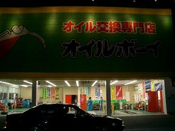
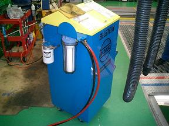
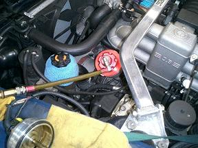
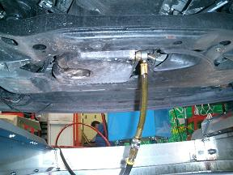
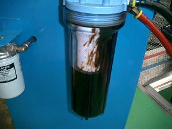
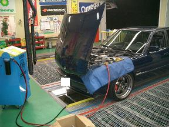
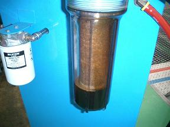
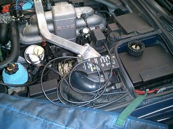

 shingoさんに教えてもらったビルフラを試してみることに＾＾ |
 これで、強制的に洗浄剤を循環させて汚れを取り除くようです。 |
 エンジンオイルを抜いてアダプターを装着します。shingoさんとのぶさんが施工済みなので順序良く作業が進みます＾＾ |
 ドレンにもホースを。 |
 スタートすると黒いオイルと共に汚れが出てきました！ |
 この作業を数回繰り返して汚れを十分に取り除くようです。 |
 循環後のフィルター 真っ黒です。。 |
 エンジンオイルを入れてインディケーターをリセットして完了＾＾ 帰りの高速道路でエンジンの回転が軽くなっていることに気づく。 家に着くころには分からなくなってました＾＾； ご一緒いただいたshingoさんありがとうございました。
|